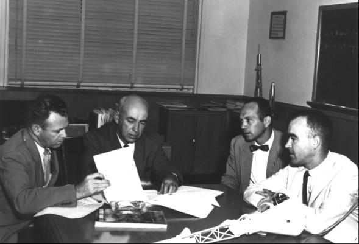

"You are hereby directed . . . to accelerate the super booster program for which your agency recently was given technical and management responsibility," Eisenhower wrote Glennan in January 1960. This action ensured the transfer of the von Braun group from the Army Ballistic Missile Agency to NASA,31 giving Glennan the launch vehicle development and management capability that he wanted.
Eisenhower's letter to Glennan was the first indication that the administration might approve something beyond Mercury. At least, Glennan interpreted it that way and told Silverstein, Director of NASA's Office of Space Flight Programs, to encourage advanced design teams at each field center and in the aerospace industry. Plans soon came in from both of those sources. In February 1960, von Braun's team distributed its latest study, "A Lunar Exploration Program Based upon Saturn-Boosted Systems."32 A month earlier, J. R. Clark of Vought Astronautics, the Dallas, Texas, division of Chance Vought Aircraft, Inc., had sent Silverstein a brochure, "Manned Modular Multi-Purpose Space Vehicle," the work, primarily, of Thomas E. Dolan. The booklet outlined a unified, systematic approach to a national space exploration program leading toward a manned lunar landing mission.33
In early 1960, with Mercury still unproved, chances of winning administration approval to move either of these proposals (or any others that surfaced) into the hardware development stage were small. On the other hand, no one was told to stop planning a payload that might fit atop the newly approved superbooster. In fact, on 15 February 1960, Silverstein told Gilruth to "work out a presentation similar to Vought using [the] modular concept," which simply meant designing separate pieces of the spacecraft for specific functions at different phases of a mission. Gilruth gave this task to Piland's advanced design group, a somewhat more concrete assignment than that of the previous November.34
Piland's team pulled together some guidelines and began presenting them to all the NASA centers. Piland, Faget, Stanley White, and Robert Chilton spoke, answered questions, and distributed copies of their papers on the aspects of lunar mission planning, leaving the final summary to Gilruth's Associate Director for Development, Charles J. Donlan. Donlan outlined the problems that could be foreseen and solicited "suggestions and proposals as to how best this effort can be carried out. . . . We would hope in the immediate future to obtain your views as to the problems each Center may concentrate on so that the whole NASA effort can be integrated as soon as possible."
Donlan asked specialists at the NASA centers to study such critical areas as flight duration, optimum launch times, propulsion requirements, trajectory analyses, and the effects of the moon's gravity on lunar orbits. He also cited the need for configuration studies of the lunar landing stage - "a one- or two-component lunar vehicle."35 While these briefing sessions were going on, Langley sponsored a conference on space rendezvous in May 1960. Participants from all of NASA's organizations reviewed rendezvous studies under way and discussed likely avenues for further research. Although rendezvous would be invaluable for future manned space programs, until NASA secured funds for a rendezvous flight-test program, the centers would be limited to their own ground-based experiments. Langley was already engaged in studies.36 John C. Houbolt, Assistant Chief of the Dynamic Loads Division, had formed a small group to study "soft rendezvous" - or how two vehicles could come together at the high velocities required for space travel without crashing into each other.37
Toward mid-1960, committees and groups within NASA had done as much preliminary internal work as was profitable; John Disher and George Low persuaded Glennan that it was time to sponsor a NASA-Industry Program Plans Conference in late July to tell of NASA's tentative plans. At one of the last briefings for this meeting, on 9 July, the Administrator approved the awarding of three feasibility contracts for advanced manned space flight studies.38
Silverstein, one of those leading the charge toward more far-ranging flights than Mercury, had been looking for a suitable name for a payload for the Saturn rockets. None suggested by his associates seemed appropriate. One day, while consulting a book on mythology, Silverstein found what he wanted. He later said, "I thought the image of the god Apollo riding his chariot across the sun gave the best representation of the grand scale of the proposed program." Occasionally he asked his Headquarters colleagues for their opinions. When no one objected, the chariot driver Apollo (according to ancient Greek myths, the god of music, prophecy, medicine, light, and progress became the name of the proposed circumlunar spaceships. At the opening of the conference on 28 July 1960, Dryden announced that "the next spacecraft beyond Mercury will be called Apollo."39
On 28 and 29 July 1960, 1,300 representatives from government, the aerospace industry, and the institutions attended the first in a series of NASA-industry planning sessions. During these two days, 20 NASA officials outlined the agency's plans for launch vehicle development and potential projects for manned and unmanned spacecraft. Many of the invitees returned on 30 August to learn about plans for a circumlunar manned spacecraft program and three six-month feasibility contracts to be awarded later. Briefings by the Space Task Group's top officials and planners, including Gilruth and Piland, emphasized that Apollo would be earth-orbital and circumlunar and would directly support future moon landings. Donlan wound up the afternoon with particulars of the Space Task Group's procurement plan. Any interested company would be invited to a bidders' conference in two weeks; formal proposals would be required four weeks later; and the study contracts would be awarded by mid-November.40
Following the same general format, the bidders' briefing at Langley on 13 September included a formal request for proposal, a statement of work, and some definite guidelines. Essentially, these ground rules were based upon the assumption that the Saturn booster could launch a lunar reconnaissance spacecraft that would support three men for two weeks.

Robert Gilruth (second from left), Director of the Space Task Group, and chief assistants Charles Donlan (left), Maxime Faget, and Robert Piland in August 1960 discuss selection of contractors to study feasibility of a manned circumlunar mission.
Piland laid out four mission and vehicle guidelines: manned lunar reconnaissance; earth-orbital missions in conjunction with a space laboratory or space station; Saturn booster compatibility (spacecraft weight not to exceed 6,800 kilograms for lunar missions); and a 14-day flight time.
Faget stressed return, reentry, and landing: safe recovery from aborts; ground and water landings (with a capability for avoiding local hazards); 72-hour postlanding survival period; landing in preplanned locations; and auxiliary propulsion for maneuvering in space.
Richard S. Johnston presented three demands: "shirt-sleeve" environment, three-man crew, and radiation protection. He discussed the need of the crews for a safe environment and for atmospheric control.
Finally, Chilton presented guidelines for onboard command, emphasizing man's role as an active participant in the mission and its influence on hardware design, and for communications tracking, discussing the ground facilities needed for flights beyond earth orbit. Altogether, these guidelines constituted what the Space Task Group would demand of the Apollo spacecraft.41
31. President Eisenhower to Glennan, 14 Jan. 1960; Admin., NASA, and Acting Secy. of Defense to the President, draft memo, "Responsibility and Organization for Certain Space Activities," 2 Oct. 1959; Glennan and Acting Secy. of Defense Thomas S. Gates to the President, subj. as above, 21 Oct. 1959 (approved by Eisenhower 2 Nov. 1959); House Committee on Science and Astronautics, Transfer of the Development Operations Division of the Army Ballistic Missile Agency to the National Aeronautics and Space Administration: Hearing on H. J. Res. 567, 86th Cong., 2nd sess., 3 Feb. 1960.
32. ABMA, "A Lunar Exploration Program Based upon Saturn-Boosted Systems," Rept. DV-TR-2-60, 1 Feb. 1960.
33. J. R. Clark, Vought Astronautics, to NASA, Attn.: Silverstein, "Manned Modular MultiPurpose Space Vehicle Program - Proposal for," 12 Jan. 1960, with enc., "Manned Modular Multi-Purpose Space Vehicle"; John D. Bird, interview, Langley, 20 June 1966.
34. John H. Disher, notes on meeting at Langley attended by Silverstein, Gilruth, Low, and Faget, 15 Feb. 1960 (emphasis in original).
35. Space Task Group, "Guidelines for Advanced Manned Space Vehicle Program," June 1960, esp. Charles J. Donlan, "Summary and Scheduling," pp. 47-50; STG, "Slides for Advanced Vehicle Presentation," April 1960; Disher to Dir., Space Flight Prog., "NASA Center Briefings on Advanced Manned Space Flight Program," 10 May 1960.
36. John M. Eggleston, Langley Research Center, "Inter-NASA Research and Space Development Centers Discussion on Space Rendezvous, . . . May 16–17, 1960," 25 May 1960.
37. John C. Houbolt, interview, Princeton, N.J., 5 Dec. 1966; idem, "Considerations of the Rendezvous Problems for Space Vehicles," paper presented at the Society of Automotive Engineers National Aeronautical meeting, New York, 5–8 April 1960; I. E. Garrick to Emme, "Item for the historical record of the Apollo Program," 31 Oct. 1969, with enc., Garrick to Chief, Dynamic Loads Div., Langley, subj. as above, 7 Oct. 1969; Bird, "A Short History of the Lunar-Orbit-Rendezvous Plan at the Langley Research Center," 6 Sept. 1963 (supplemented 5 Feb. 1965 and 17 Feb. 1966).
38. Disher memo to Long Range Plan and Budget File, "Meeting with Dr. Glennan on 7/9/60 to discuss long range plans for Saturn utilization by OSFP," 11 July 1960; Disher draft, "Long Range Plan: Manned Space Flight Program," 8 Aug. 1960.
39. Disher memo, 11 July 1960; Merle G. Waugh to Grimwood, 5 Nov. 1963; Lee D. Saegesser, NASA Historical Div., informal memo, "Apollo, naming of," 11 June 1969; William D. McCann, "Dr. Abe Silverstein Certain to Rate in Space Hall of Fame," Cleveland Plain Dealer, 14 July 1969, as cited in Congressional Record, 17 July 1969, p. E6092; Donlan, interview, Langley, 20 June 1966; "Apollo Program Review, October 20, 1962," p. 1; Silverstein to GSFC, Attn.: Goett, "Official Name of the Advanced Manned Space Flight Program," 25 July 1960; Hugh L. Dryden, "NASA Mission and Long-Range Plan," in NASA-Industry Program Plans Conference, 28–29 July 1960 (Washington, 1960), p. 8; Low, "Manned Space Flight," ibid., p. 80; Grimwood, "Mercury, Gemini, Apollo: How They Got Their Names," Manned Spacecraft Center Roundup, 3 Oct. 1969; Felix Guirand, ed., New Larousse Encyclopedia of Mythology, trans. Richard Aldington and Delano Ames (New York: Hamlyn Pub. Group, 1968). Cf. Berthold Laufer, The Prehistory of Aviation (Chicago: Field Museum of Natural History, 1928); Ernst and Johanna Lehner, Lore and Lure of Outer Space (New York: Tudor, 1964); Nikolai A. Rynin, Interplanetary Flight and Communication, 3 vols., 9 nos. (trans. of Mezhplanetye soobshcheniya, Leningrad, 1928–1932; NASA TT F-640 through TT F-648, Washington, 1970–1971); and Gertrude and James Jobes, Outer Space: Myths, Name Meanings and Calendars (New York: Scarecrow Press, 1964).
40. Charles Corddry, "NASA Plans 260 Space Shots in 10 Years; Astronaut in 1961," Washington Post, 29 July 1960; NASA-Industry Conference, 28–29 July 1960; Goett, draft memo to Dir., Off. of Space Flight Prog., no subj., 8 Aug. 1960; STG, "Project Apollo: Invitation to Bid on a Research and Development Contract for a Feasibility Study of an Advanced Manned Spacecraft and System," 10 Aug. 1960; Goett memo, "Goddard - Industry Conference," n.d., with encs.; STG, "Talks for Advanced Manned Spacecraft Presentation, Goddard Industry Conference," n.d.; NASA, "Slides for Advanced Manned Spacecraft Presentation, Goddard Industry Conference," 30 Aug. 1960; NASA, "Presentations for the Industry Conference to Be Conducted by Goddard Space Flight Center, 30 August 1960," n.d. See also Marshall Space Flight Center, "NASA-Industry Program Plans Conference, 27–28 September 1960."
41. STG, "Project Apollo: An Advanced Manned Spacecraft System," draft news release [12 Sept. 1960]; Donlan, "Project Apollo Bidders Briefing," [ca. 13 Sept. 1960]; Glenn F. Bailey, "Request for Proposal No. 302, Feasibility Study for Project Apollo," 13 Sept. 1960, with att. A and B and enc., "General Requirements for a Proposal for a Feasibility Study of an Advanced Manned Spacecraft and System," 12 Sept. 1960.